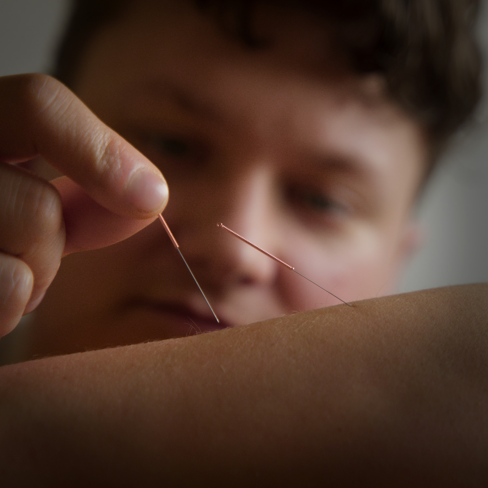
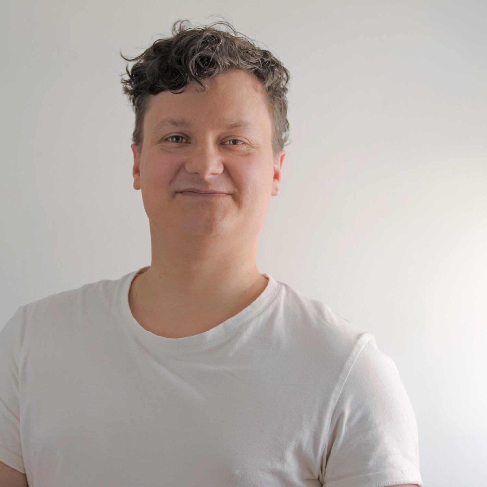
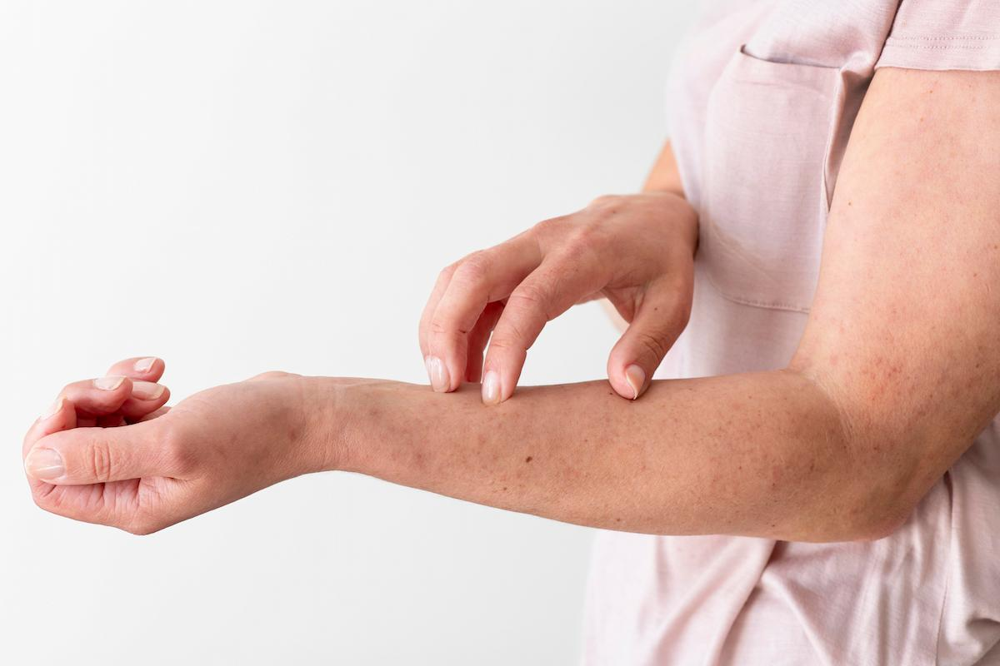

Système digestif
Douleurs abdominales, constipation/diarrhée, intestin irritable, maladie de Crohn.

Cette pratique consiste à rééquilibrer l'énergie interne du corps à l'aide de fines aiguilles en stimulant des points énergétiques précis et adaptés à la problématique, afin de rendre au corps son plein potentiel et lui permettre de se rééquilibrer naturellement.
L'acupuncture est inscrite au patrimoine immatériel de l'UNESCO du fait de ses nombreuses possibilités et de son impact majeur au niveau mondial.

J'ai découvert l'acupuncture à l'âge de 12 ans ; cette pratique nous accompagnera, ma famille et moi, durant de nombreuses années.
Animé par l'envie d'être utile et d'aider les autres, je me tourne tout d'abord vers le milieu de l'hôtellerie avant d'entamer un voyage en Australie et en Asie.
Mon premier contact avec l'univers du soin se fait en Thaïlande où je me forme au massage thérapeutique pendant plusieurs mois.
Revenu en France, je décide de compléter mes connaissances en rejoignant
l’IEATC (Institut d’Énergétique et Acupuncture Traditionnelles Chinoises), où je me forme durant quatre ans et développe une véritable passion pour cette pratique.
Douleurs abdominales, constipation/diarrhée, intestin irritable, maladie de Crohn.
Anxiété, stress, insomnie, gestion émotionnelle, maux de tête/migraine, burn out.
Douleurs articulaires et musculaires, tendinite, entorse, fracture, lumbago/sciatique, névralgie.
Règles douloureuses, syndrome prémenstruel, endométriose, ménopause, infection urinaire.
Fertilité, PMA/FIV, maux de grossesse, préparation à l’accouchement, post partum.
Asthme, toux, essoufflement, allergies, rhinite chronique.

Zona, eczéma, psoriasis, acné.
Fatigue, atténuation des effets secondaires, renfort immunitaire.
Une séance dure environ une heure.
Chaque séance commence par un échange approfondi sur le motif de la consultation et la situation générale afin d’en saisir toute sa complexité.
Après ce temps de parole et un examen clinique, de fines aiguilles stériles sont placées sur des points énergétiques et laissées en place environ vingt minutes.
Elles sont ensuite retirées et jetées, avant un dernier échange explicatif accompagné de conseils adaptés.
Chacun réagit de manière unique.
Beaucoup ressentent une amélioration dès la première séance, tandis que pour d’autres plusieurs sessions peuvent être nécessaires.
L’ancienneté du trouble influence également la capacité du corps à retrouver rapidement son équilibre.
Les aiguilles d’acupuncture sont très fines et ne déchirent pas les tissus, contrairement aux aiguilles médicales classiques.
La plupart des patients ressentent seulement un léger inconfort, de courte durée.
Elle s’adresse à tous les sexes et à tous les âges à partir de sept ans.
Il n’y a aucune contre-indication en cas de traitement médicamenteux ou de pathologie connue.
Elle est adaptée aux femmes enceintes ainsi qu’aux personnes à mobilité réduite.
Le cabinet est accessible aux fauteuils roulants et aux poussettes.
Les accompagnants sont les bienvenus lors des séances.
Je parle également couramment anglais et peux vous recevoir en consultation en anglais si nécessaire.
N’hésitez pas à me contacter directement si vous avez un doute vous concernant.
L’acupuncture transmet une information à votre corps.
Afin de ne pas altérer ce processus, il est recommandé d’éviter le jour même le sport ainsi que toute activité physique intense.
Toute prise de rendez-vous se fait via ce site internet, téléphone ou SMS.
La séance est facturée 70 € (tarif préférentiel en cas de suivi PMA ou cancer).
Les règlements par carte bancaire, espèces et chèques sont acceptés.
Votre mutuelle peut prendre en charge la séance au même titre que d’autres médecines douces.
N’étant pas médecin, je ne peux pas fournir de numéro ADELI ou RPPS.
N'hésitez pas à contacter directement votre mutuelle.
Je suis praticien en énergétique traditionnelle chinoise et non docteur en médecine.
À ce titre, je ne réalise pas de diagnostic médical, n'interviens pas dans les prescriptions et ne remplace en aucun cas votre médecin.
Mon accompagnement s’inscrit en complément d’un suivi médical, si nécessaire.
Consultez les disponibilités
Je réserve une séance
2, Boulevard Victor Hugo
78300 Poissy
Cabinet accessible aux fauteuils roulants et aux poussettes.
Lundi - Mardi - Mercredi : de 9h30 à 20h00.
Téléphone : 06 64 25 49 44
Email : reynier.acu@gmail.com